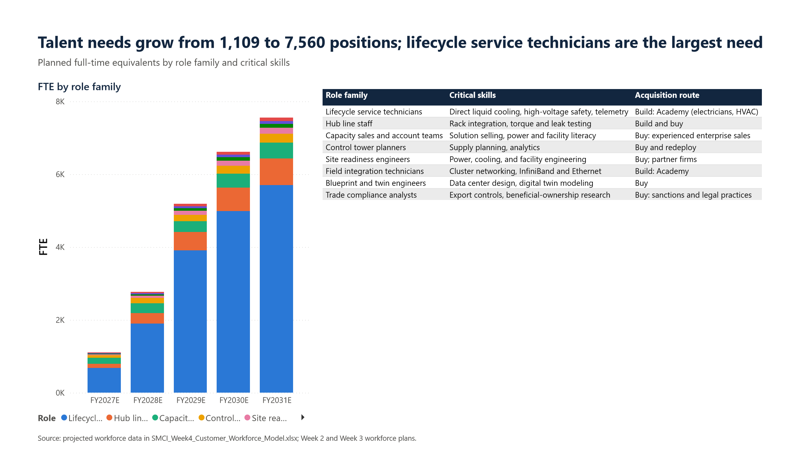
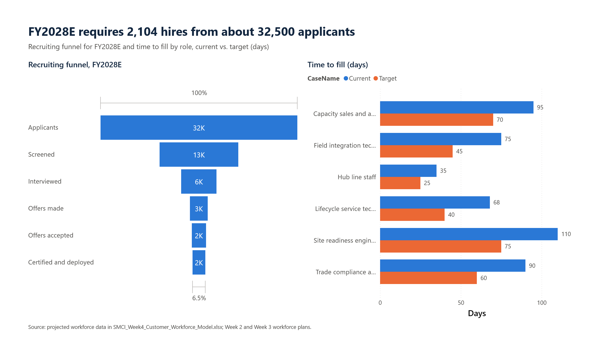
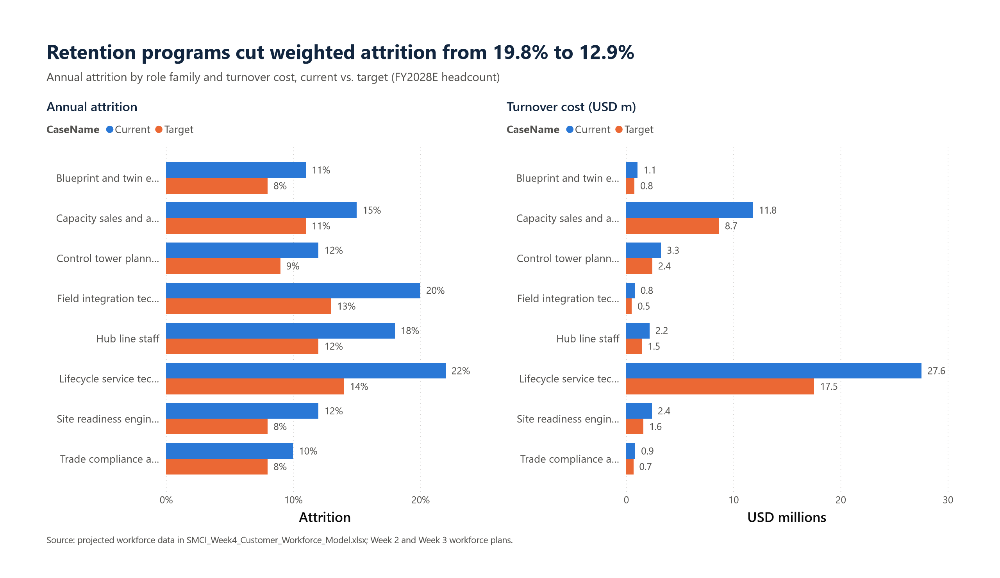
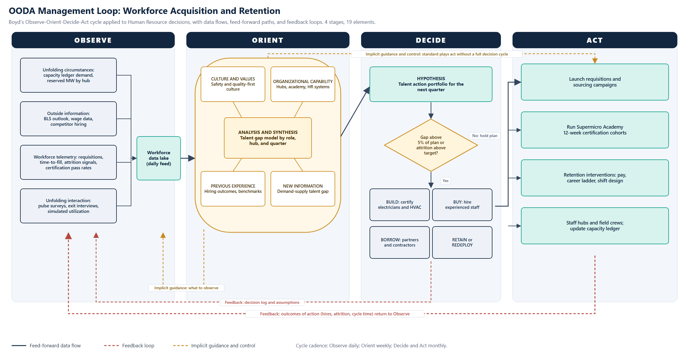
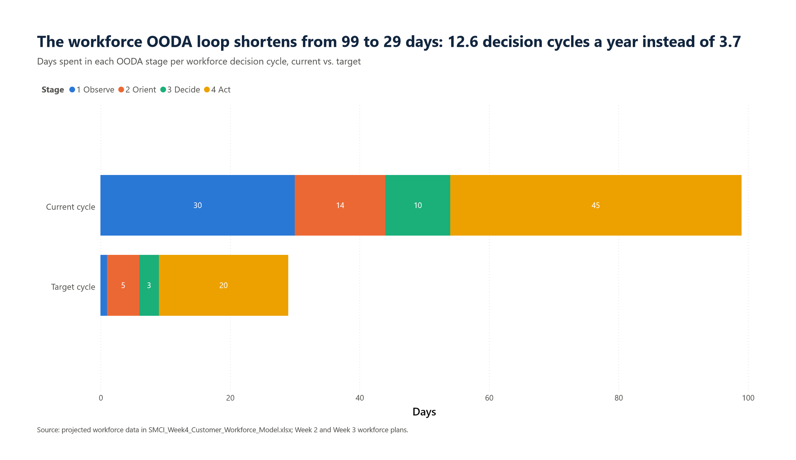
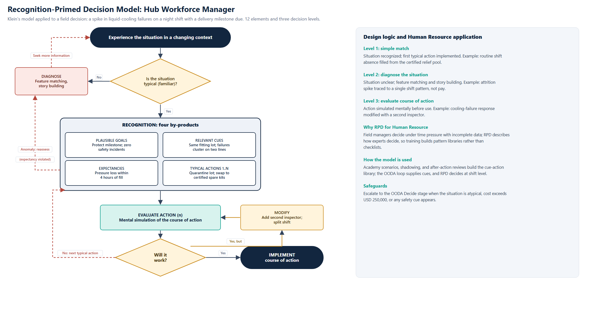
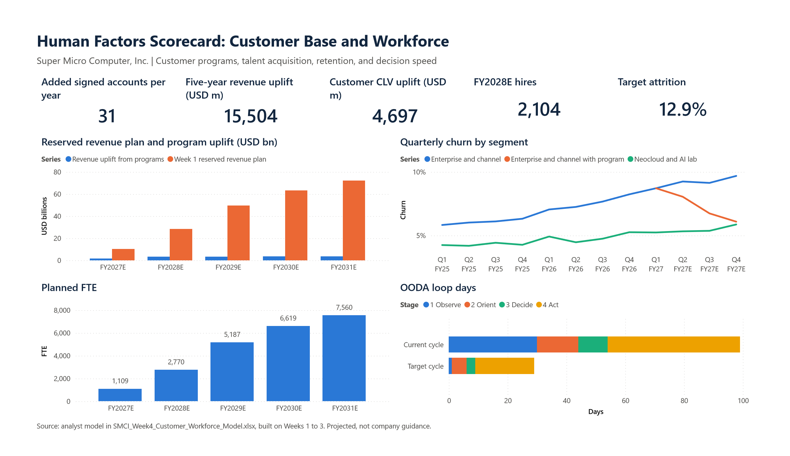

Human Resource
Talent Requirements

Analysis. The reservation flow requires 1,109 positions in FY2027E, rising to 7,560 by FY2031E. Lifecycle service technicians form the largest need, growing from 685 to about 5,700, because liquid-cooled clusters require continuous specialist service. The scarcest skills are:
- direct liquid cooling and high-voltage safety;
- cluster networking (InfiniBand and Ethernet);
- data center power and cooling engineering;
- export control and beneficial-ownership research;
- solution selling that combines IT and facility knowledge.
Acquiring the Skills
Talent acquisition follows a build, buy, and borrow strategy.
- Build. The Supermicro Academy runs 12-week certification cohorts that convert licensed electricians and HVAC mechanics into liquid-cooling and field integration technicians. Both trades are projected to grow faster than average, by 9% and 11% from 2025 to 2035 (U.S. Bureau of Labor Statistics, n.d.-a, n.d.-b). The Academy also recruits from military technical specialties and community-college partnerships near each hub.
- Buy. Experienced hiring covers site readiness engineers, blueprint engineers, trade compliance analysts, and enterprise sales staff, sourced from engineering firms, sanctions and legal practices, and enterprise technology vendors.
- Borrow. Engineering partners and certified contractors absorb demand peaks, which is particularly important in FY2028E and FY2029E when hiring requirements peak.

Analysis. FY2028E requires 2,104 hires: 1,661 for growth and 443 to replace attrition. At projected stage conversion rates, the requirement implies about 32,500 applicants. Time to fill falls from 68 to 40 days for lifecycle technicians and from 110 to 75 days for site readiness engineers through standing requisitions, Academy pipelines, and pre-approved offer bands. More than half of data center operators already report difficulty filling positions (Uptime Institute, 2026), so pipeline capacity, not budget, is the binding constraint.
Retaining Current and New Employees

Analysis. Retention measures cut weighted attrition from 19.8% to 12.9%:
- certification-linked pay steps;
- a technician-to-engineer career ladder;
- predictable shift design at the hubs;
- retention bonuses tied to customer energization milestones;
- recognition through the reference-customer program.
Field technicians carry the highest attrition, at 22% currently against a 14% target. The program roughly recovers program cost in direct turnover savings, saving USD 7.2 million net of program spending in FY2028E. The larger benefit is operational: every retained certified technician preserves capacity that the hiring pipeline cannot quickly replace.
Human Behavior Models in the Design
The management design draws on three families of human behavior models.
- Cognitive models. Information-processing models describe how operators perceive, interpret, and act under limited attention and memory (Wickens et al., 2013). The workforce dashboards therefore present a small number of high-salience indicators rather than full data dumps. Situation awareness develops at three levels: perception of the situation, comprehension of the meaning of the situation, and projection of future status (Endsley, 1995). The OODA Observe and Orient stages are designed to build all three.
- Decision-making models. The OODA loop structures deliberate, organization-level workforce decisions (Boyd, 1996; Osinga, 2007). The Recognition-Primed Decision model describes how experienced field managers decide quickly under time pressure (Klein, 1998).
- Perception models. Signal detection theory distinguishes true signals from noise and separates sensitivity from response bias (Green & Swets, 1966). The design applies the theory to attrition early-warning alerts and to candidate screening, where thresholds are tuned to balance missed risks against false alarms.
OODA Management Flowchart

Model interpretation. The management OODA cycle connects four streams of workforce data to the talent gap model, intervention portfolio, and execution feedback. Implicit guidance supports fast standard responses.
Model Design Logic
- Observe. Four data streams feed a daily workforce data lake:
- unfolding circumstances, such as capacity-ledger demand by hub;
- outside information, such as labor-market outlook and competitor hiring;
- workforce telemetry, such as requisitions, time to fill, attrition signals, and certification pass rates;
- unfolding interaction with the environment, such as pulse surveys, exit interviews, and simulated utilization from Week 2.
- Orient. Orientation filters observations through culture and values (safety and quality first), organizational capability (hubs, Academy, systems), previous experience (past hiring outcomes and benchmarks), and new information (the demand-supply talent gap). Analysis and synthesis produce a weekly talent gap model by role, hub, and quarter. Boyd placed orientation at the center of the loop because orientation shapes what is observed and how options are framed (Osinga, 2007).
- Decide. The gap model generates a hypothesis: a talent action portfolio for the next quarter. A decision gate tests whether the gap exceeds 5% of plan or attrition exceeds target. If either holds, managers select among build, buy, borrow, and retain-or-redeploy options.
- Act. Actions launch requisitions and campaigns, schedule Academy cohorts, apply retention measures, and staff hubs and field crews, with the capacity ledger updated as staff are deployed.
- Feedback loops. Outcomes of action (hires, attrition, cycle time) and the decision log return to Observe. Two implicit guidance and control paths run directly from Orient. The first lets standard plays, such as backfilling a known role from the certified relief pool, execute without a full decision cycle. The second directs what to observe next.

Analysis. Quarterly manual planning takes 99 days per decision cycle: 30 to observe, 14 to orient, 10 to decide, and 45 to act. The redesigned loop takes 29 days, with a daily data feed, a weekly gap model, pre-approved talent plays, and standing Academy cohorts. Supermicro therefore completes 12.6 workforce decision cycles per year instead of 3.7, so staffing adjusts to demand changes within a month rather than a quarter. In Boyd's terms, the faster loop lets Supermicro act on the labor market before competitors can respond.
Recognition-Primed Decision Model

Model interpretation. The Recognition-Primed Decision model applies learned cues, typical actions, anomaly detection, and mental simulation to urgent field staffing and quality decisions.
Model Design Logic
The Recognition-Primed Decision (RPD) model, developed from studies of fireground commanders, describes how experienced decision makers act under time pressure. Rather than comparing options, an expert recognizes the situation and evaluates a single course of action at a time (Klein et al., 1986; Klein, 1998). The model applies directly to hub and field managers, who make staffing and safety decisions within hours.
- Experience the situation. The manager perceives the situation in a changing context: cooling failures cluster on two lines during the night shift.
- Typicality test. If the situation is unfamiliar, the manager diagnoses the situation through feature matching and story building and seeks more information before acting.
- Recognition. When the situation is familiar, recognition yields four by-products:
- plausible goals: protect the milestone with zero safety incidents;
- relevant cues: the same fitting lot and failures on two lines;
- expectancies: pressure loss within four hours of fill;
- typical actions: quarantine the lot and swap to certified spare kits.
If an expectancy is violated, the anomaly sends the manager back to reassess the situation.
- Mental simulation. The manager mentally simulates the first typical action. If the action will work, the manager implements the action. If the action will work with changes ("yes, but"), the manager modifies the action, for example by adding a second inspector and splitting the shift, and re-evaluates. If the action will not work, the next typical action is considered.
- Three levels. Level 1 is a simple match, Level 2 requires diagnosing the situation, and Level 3 evaluates the course of action through simulation.
Integration with the OODA loop. The OODA loop governs deliberate organizational decisions on a monthly cycle, while RPD governs field decisions in minutes and hours. The OODA Orient stage supplies the cue library that RPD depends on. After-action reviews from field decisions return to Observe. Escalation rules route atypical situations, decisions above USD 250,000, and any safety cue back to the OODA Decide stage. The Academy builds expertise for RPD deliberately through scenario training, shadowing, and after-action reviews, so that new technicians reach recognition-level expertise faster.

Model interpretation. The human factors scorecard consolidates customer funnel performance, retention, workforce acquisition, attrition, and decision-cycle metrics for management review.
Conclusion
The human factors analysis completes the Reservation-Backed AI Factory proposal on several fronts:
- Customer base. The base is profiled and segmented, and the two barriers to expansion, funnel drop-off and channel churn, have quantified remedies worth USD 15.5 billion of revenue over five years.
- Workforce. The workforce plan identifies the talent required, a build-buy-borrow route to acquire the talent, and a retention program that cuts attrition by a third.
- Decision-making. Paired OODA and recognition-primed models allow the organization to decide faster at both the management and field levels.
Combined with the operating, pricing, quality, and investment analyses of Weeks 1 to 3, the proposal gives management a complete, evidence-based basis for approval.